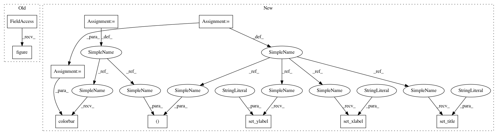

27c2dc10bb9f83026db6378c151d8108fc044af8,examples/images_contours_and_fields/tripcolor_demo.py,,,#,17
Before Change
//////////////////////////////////////////////////////////////////////////////////////////////////////////////////////////////////////////////////////////////
// tripcolor plot.
plt.figure()
plt.gca().set_aspect("equal")
plt.tripcolor(triang, z, shading="flat")
plt.colorbar()
plt.title("tripcolor of Delaunay triangulation, flat shading")
After Change
// Can specify one color value per face rather than one per point by using the
// facecolors kwarg.
fig3, ax3 = plt.subplots()
ax3.set_aspect("equal")
tpc = ax3.tripcolor(x, y, triangles, facecolors=zfaces, edgecolors="k")
fig3.colorbar(tpc)
ax3.set_title("tripcolor of user-specified triangulation")
ax3.set_xlabel("Longitude (degrees)")
ax3.set_ylabel("Latitude (degrees)")
plt.show()
In pattern: SUPERPATTERN
Frequency: 4
Non-data size: 10
Instances
Project Name: matplotlib/matplotlib
Commit Name: 27c2dc10bb9f83026db6378c151d8108fc044af8
Time: 2018-06-27
Author: jklymak@gmail.com
File Name: examples/images_contours_and_fields/tripcolor_demo.py
Class Name:
Method Name:
Project Name: matplotlib/matplotlib
Commit Name: 27c2dc10bb9f83026db6378c151d8108fc044af8
Time: 2018-06-27
Author: jklymak@gmail.com
File Name: examples/images_contours_and_fields/tripcolor_demo.py
Class Name:
Method Name:
Project Name: matplotlib/matplotlib
Commit Name: ec5e8863a6352da673b55cb971529f38278cf64e
Time: 2018-03-26
Author: pmhobson@gmail.com
File Name: examples/images_contours_and_fields/tripcolor_demo.py
Class Name:
Method Name:
Project Name: matplotlib/matplotlib
Commit Name: ec5e8863a6352da673b55cb971529f38278cf64e
Time: 2018-03-26
Author: pmhobson@gmail.com
File Name: examples/images_contours_and_fields/tricontour_demo.py
Class Name:
Method Name:
Project Name: matplotlib/matplotlib
Commit Name: 27c2dc10bb9f83026db6378c151d8108fc044af8
Time: 2018-06-27
Author: jklymak@gmail.com
File Name: examples/images_contours_and_fields/tricontour_demo.py
Class Name:
Method Name: